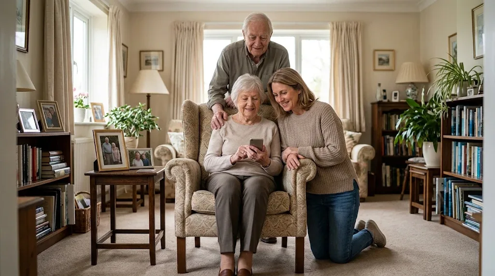
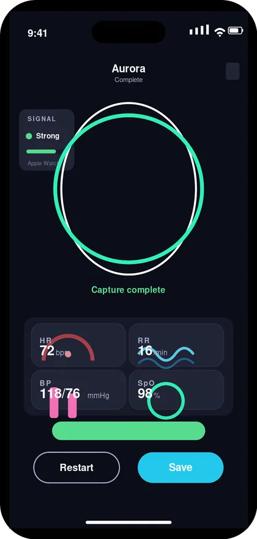
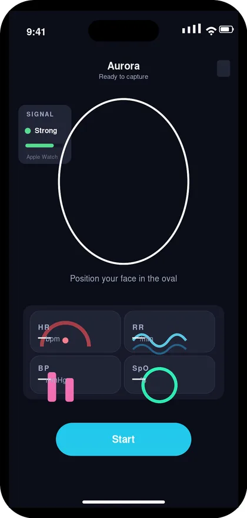

Easy to use, with a care circle you choose
It works on the phone you already have. Your care circle is the family and caregivers you invite, and you decide what each person sees.
Learn more about the care circleOne care circle app for adults and the families who support them
A 30-second check on her own phone shows how she's doing compared with her usual. She chooses who sees it.


For care communities and organizations: register organizational interest
What Aurora Care does
It works on the phone you already have. Your care circle is the family and caregivers you invite, and you decide what each person sees.
Learn more about the care circleA quick camera check on your phone shows how today's vitals compare with your own usual, so changes are easier to notice.
Learn more about the 30-second checkSay your help phrase and the people in your care circle get an alert right away. Your phone needs to be close enough to hear you.
Learn more about voice helpVitals, labs, medicines, reminders, and alerts sit together, with a report you can bring to doctor and lab visits.
Learn more about the visit reportHow it works
Grace, 74, lives on her own. Her daughter Laura lives two hours away. This is an example with demonstration data.
Step 1 · Grace

App screen, demo data
Step 2 · Laura
Grace · this week
Illustrative preview, demo data CONFIRM MATCHES APP
Step 3 · Together
Report for Dr. Lee
Share report
Illustrative preview, demo data CONFIRM MATCHES APP
What Grace has to do: one short check a day, and say her help phrase if she needs someone. Everything else, from comparing with her usual to updating her care circle, happens on its own.
The one-minute overview shows the same steps. Everything in the video is also described above, so you don't need to play it.
Why you can trust it
FDA STATEMENT · CLAIM PENDING LEGAL WORDING
HIPAA STATEMENT · CLAIM PENDING LEGAL WORDING
Why we built Aurora Care: read the founder's story
Name, relationship, and city with written permission.
Name, relationship, and city with written permission.
Name, relationship, and city with written permission.
Before you sign up
Not yet. Aurora Care comes to the App Store for iPhone in November 2026. Get launch updates and we'll email you the day it's available.
Countries at launch: PENDING DECISION Android: PENDING DECISION
Pricing isn't set yet. When it is, we'll publish it here and email launch-list subscribers, including who's included, how billing works, and how to cancel.
PENDING: PRICING AND DATE IT WILL BE SHARED
Setup is done once on her phone. Sign-in uses her phone number, with no password to remember. After that, her daily part is one 30-second check. Large text and big buttons are built in, and you can set it up together on your next visit.
PENDING: CONFIRM SETUP HELP OFFERED AT LAUNCH (PHONE, CHAT, GUIDE)
An iPhone 13 or newer. No watch, cuff, or other device is required. People in the care circle get updates on their own phone. CONFIRM: APP ONLY, OR WEB TOO
Only what she chooses. For each person she can decide, for example, whether they see vitals and trends, medicines and missed doses, labs, and appointments. She can change or remove access at any time.
Her care circle can see when her last check was, so a quiet day is visible without a phone call.
PENDING: CONFIRM WHETHER A MISSED CHECK SENDS A NOTIFICATION
The people in her care circle. When she says her help phrase, they get an alert on their phones. No one at Ragaven responds, and Aurora Care does not call 911. In a medical crisis, call 911.
Voice help works only when her phone is close enough to hear her. PENDING: CONFIRM RE-ALERT BEHAVIOR WHEN NO ONE RESPONDS
Trust & privacy
Choosing who in the family sees what is one part of privacy. How Ragaven stores and handles the information is the other. Here is how both work.
Results of her checks, plus the labs, medicines, appointments, and notes she imports or enters.
She invites each person. They see only what she allows for them, nothing more.
She can change what someone sees, or remove them, at any time in the app. She can also download or delete her information.
The camera is used for the 30-second check and a quick face check that the reading is hers. The microphone is used for her help phrase. Location is shared with her care circle when she asks for help. CONFIRM WITH PRODUCT
STORAGE AND PROCESSORS · CLAIM PENDING LEGAL WORDING
Questions about her data: PENDING: PRIVACY CONTACT ADDRESS Read the privacy policy
What Aurora Care is not. Aurora Care helps families notice changes and follow up sooner. It does not diagnose, treat, or replace a doctor, and it does not replace calling 911.
Interested in offering Aurora Care to residents or staff? Tell us about your organization and we'll follow up.